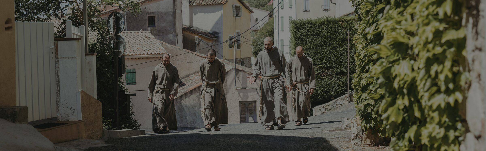
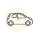
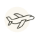
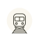
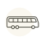

Contact
Contactez-nous ou venez nous rencontrer
Vous nous trouverez en France, à Callas
et à Plan-d'Aups-Sainte-Baume
7, Rue Sous Clastre - 83830 Callas

En voiture
Callas se trouve dans l'arrière-pays du Var, à environ 20 km de Draguignan et 70 km de Nice. Depuis l'A8, sortie Fréjus/Saint-Raphaël, suivre les indications vers Draguignan, puis vers Callas.

En avion
Les aéroports les plus proches sont Nice Côte d'Azur (environ 90 km) et Toulon-Hyères (environ 80 km). Depuis l'un ou l'autre, on peut rejoindre Callas en voiture ou en taxi/location.

En train
La gare la plus proche est Les Arcs-Draguignan, sur la ligne Marseille–Nice. De là, on poursuit en taxi ou avec un véhicule privé jusqu'à Callas (environ 25 km).

En autocar
Depuis Draguignan, il existe des liaisons en autocar régional vers Callas. Nous conseillons de vérifier les horaires actualisés sur le site de Varlib, le service de transport public du département du Var.
Dom. Roc-Estello 42, allée de Béthanie – 83640 Plan-d'Aups-Sainte-Baume
En voiture
Plan-d'Aups-Sainte-Baume se trouve dans l'arrière-pays entre Marseille, Aix-en-Provence et Toulon. Depuis Marseille, prendre l'A50 en direction de l'est, puis la D560 et la D80. Depuis Aix-en-Provence, prendre l'A8 vers le sud. Depuis Toulon, prendre l'A50 en direction de l'ouest (environ 55 minutes, 70 km).
En avion
L'aéroport le plus proche est Marseille Provence (environ 70 km, une heure de route) ; de là, on peut louer une voiture ou rejoindre la gare TGV d'Aix-en-Provence ou d'Aubagne. Le second plus proche est Nice (156 km, environ une heure 55 par l'A8).
En train
Les gares les plus pratiques sont Aix-en-Provence TGV, Marseille Saint-Charles et Aubagne (TER). De l'une d'elles, on peut poursuivre en autocar régional jusqu'à Plan-d'Aups-Sainte-Baume, ou en taxi.
En autocar
Les arrêts les plus proches de Roc Estello sont Le Corbusier ou Maison de Pays, sur le réseau régional ZOU ! (ligne 114 depuis Saint-Maximin, ligne 8403 depuis Aubagne). Vérifiez toujours les horaires actualisés avant le déplacement.
Soutenez les frères et leur apostolat.
Votre contribution permettra à la communauté de vivre concrètement la compassion et la communion de l'Évangile.
SOUTENEZ-NOUS